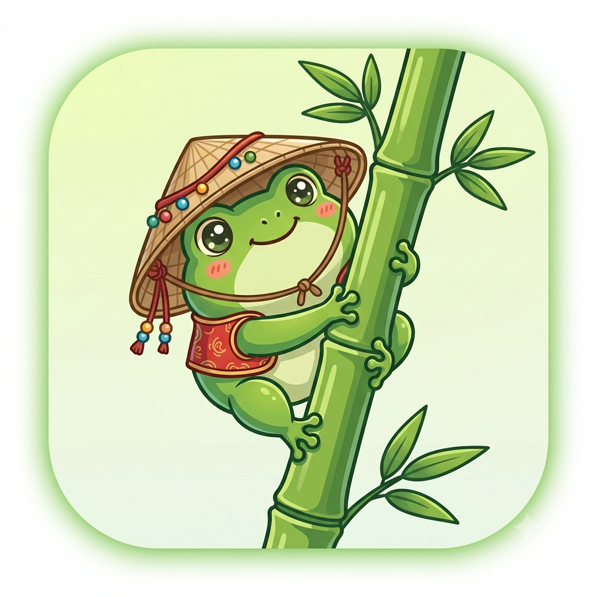

Tu navegador no soporta audio.
🎵 Música

¡Hola! Soy Hip
¿Cómo te llamas? Personalicemos tu experiencia.
Empezar a triunfar
Hip Go
🌙
🔥 Racha: 0 días
🧊 Congelamientos: 0
¡Bienvenido!
Cargando sabiduría...
🛠️ Herramientas de Productividad
⏱️ Cronómetro
✅ Tareas
00:00:00
Iniciar
Detener
Reiniciar
+
Rutina Matutina (20/20/20)
🏃 Ejercicio
🧘 Meditación
📖 Lectura
20:00
Iniciar
Pausar
Reiniciar
Rutina Rápida 5 min (Congelar Racha)
Pomodoro
Trabajo (25m)
Descanso (5m)
25:00
Iniciar
Pausar
Reiniciar
Medallas y Recordatorios
Activar Notificaciones
Logros Fijos
Logros de Racha (Largo Plazo)
Bitácora Diaria